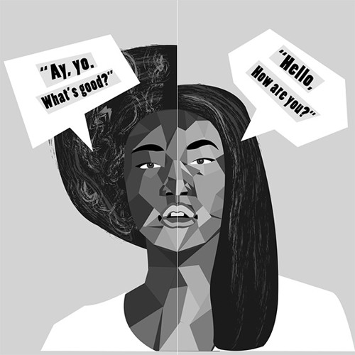

Imagine stepping into a room full of people, a room where you suddenly feel like every movement, every gesture, every word you make will be judged. Every little thing you do is being weighed against you. To fit in, you change, to simply put it – your voice shifts, your mannerisms adjust. Maybe your accent even softens, to the point where it’s virtually undetectable. This act, called code-switching, isn’t just about language, whether it be verbal or body. But what happens to your sense of identity when you’re constantly switching from your natural self? And what does this daily occurrence reveal about the human need for connection and acceptance?
The phenomenon known as code-switching is when individuals (typically from a different culture) switch between languages or dialects depending on the context and their environment. For example, someone who is bilingual might speak only Spanish at home, but switch to English at work. However, code-switching is not only limited to linguistics. It also encompasses behavioral and non-verbal cues. People might adjust their behavior, how they dress, or their tone of voice in order to fit into different social settings, like using formal language when speaking to a professor but taking on a more relaxed tone when speaking to friends or peers. These shifts, while sometimes intentional, are often subconscious, and arise from a desire to fit into a particular social group and communicate more effectively.
Code-switching is often used by people of color as a protection against bias and/or discrimination. While it does help marginalized populations fit in with whatever crowd they’re with and feel safer in spaces that may be predominantly white, it can be mentally and emotionally draining, and cause them to feel like they can never fully be themselves.
This problem is prevalent in situations such as when applying for a job. For instance, studies have shown that people who code-switch during applications by deemphasizing or even outright hiding their racial identity are often perceived as “more professional” and are more likely to receive interview invitations. However, this does prove to be a struggle as well, as their potential employers tend to see people of the same racial group as “less civilized” if they do not code switch. Additionally, people of that racial group may even think those who code switch are “whitewashed” (a minority who acts more like a white person and is disconnected from their own culture).
Again, code-switching does go beyond the English language. Black employees, in particular, often change their hairstyle into something more socially acceptable. Most of the time, this means that they will have to exchange wearing their natural hair or other protective styles in favor of something not natural, such as straightened or relaxed hair, which can end up being damaging in the long run. This helps when trying not to be perceived as “dirty”, “lazy”, “nappy-headed”, etc.
The science behind this is referred to as cognitive dissonance. Cognitive dissonance occurs when your beliefs and values do not align with your behavior, so you try to change one or the other in order to reduce your level of discomfort. In the case of people who code-switch, those who pride themselves on values such as self-expression or self-love may have to trade those values out in environments where they believe they have to change themselves to fit in.
Ultimately, code-switching is shedding light on the complex trade-offs that many people, especially those of color, have to navigate when adjusting to different social cultures while trying to stay true to oneself. For many, it’s a necessary adaptation, but it also raises critical questions: why should people have to constantly change parts of themselves when wanting to be accepted? Can society ever truly reach a point where no one will have to code-switch to welcome other people?
Perhaps the end goal shouldn’t be to completely eliminate code-switching, but to create a world where people don’t feel pressured into doing it. By valuing authenticity over conformity, we can create a safe space for more genuine connections between humans from cultures all over the world.